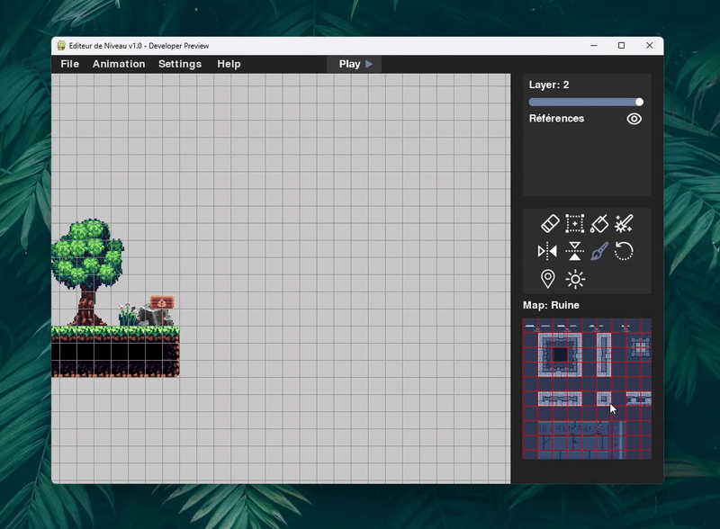
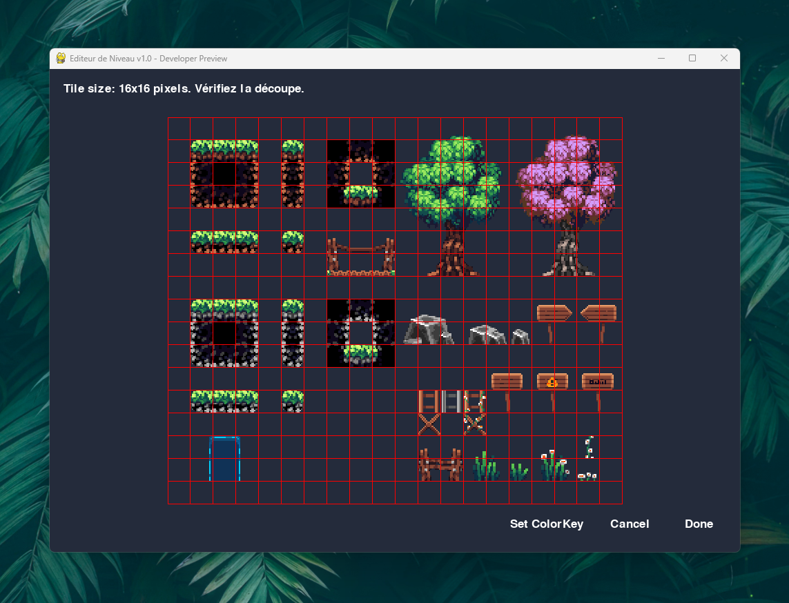
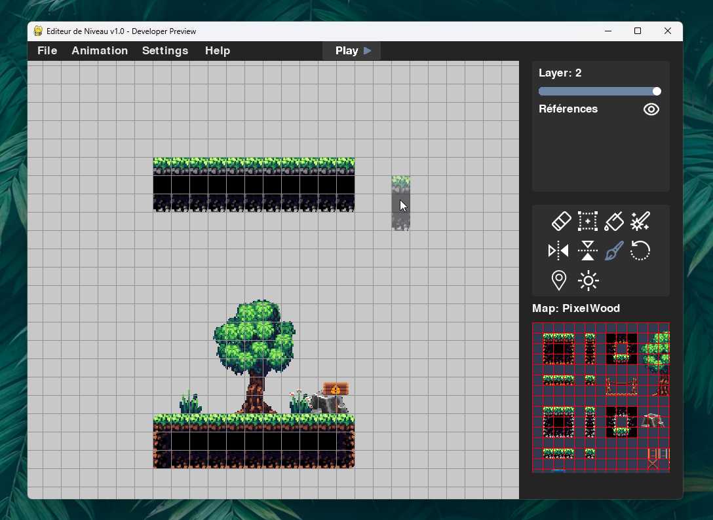
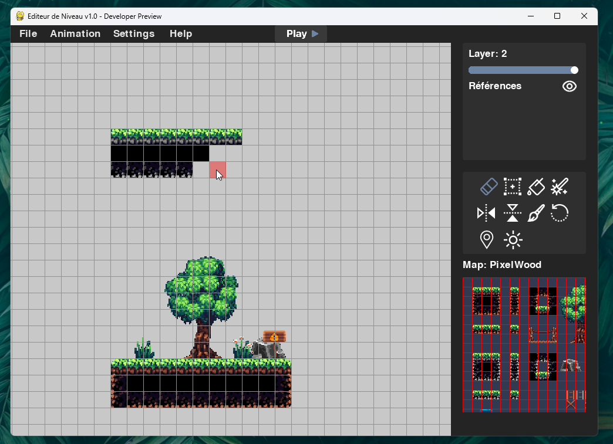
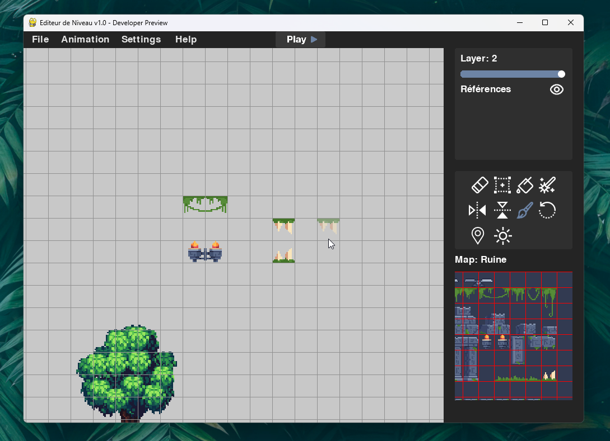
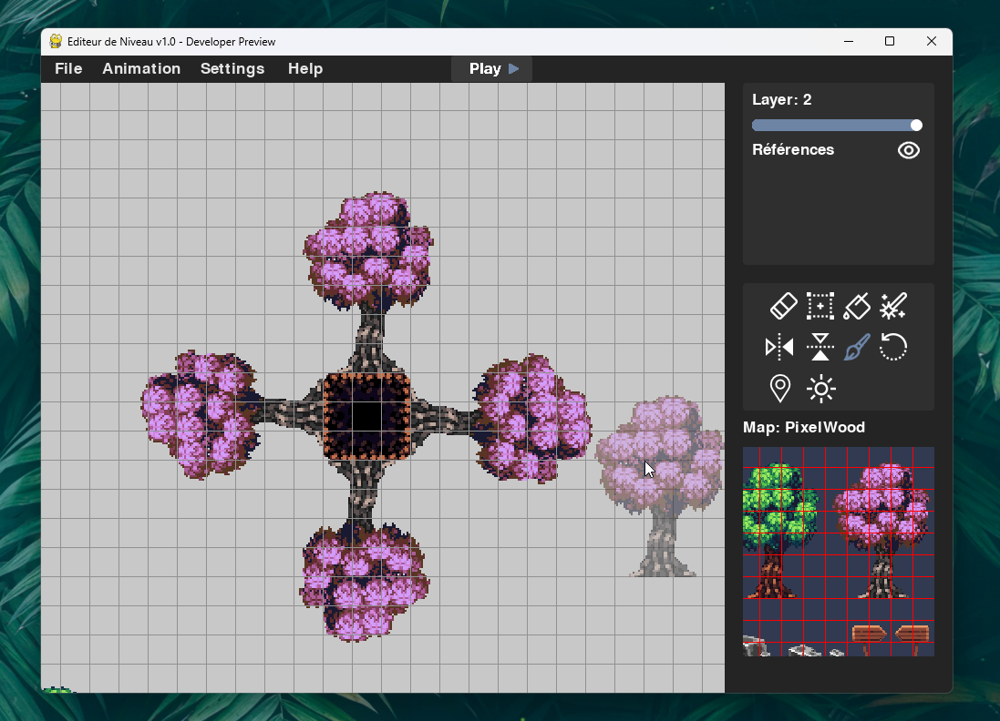
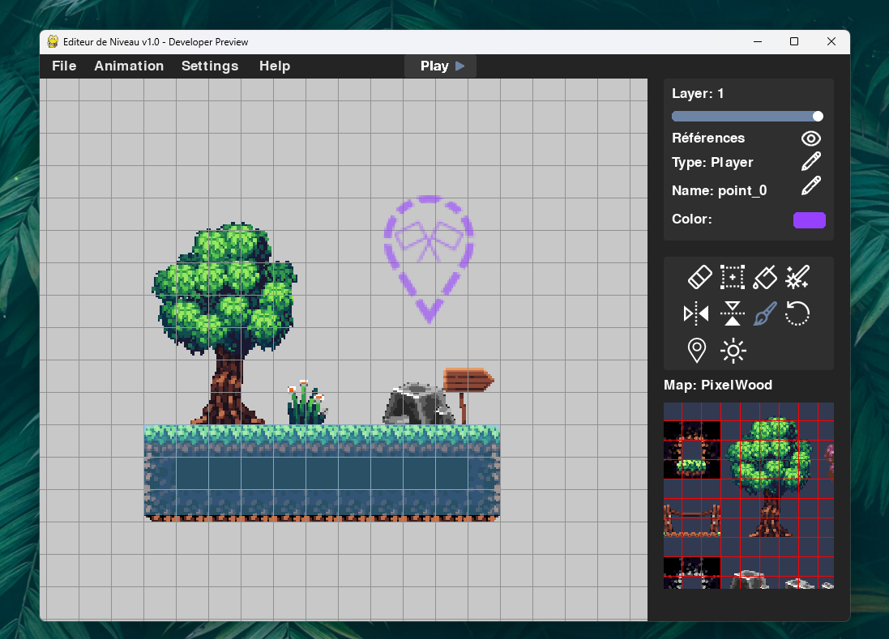

Viewport
Le viewport est la zone principale où vous dessinez et naviguez dans votre carte. Vous pouvez :
- Clic droit + glisser : déplacer la vue
- Molette : zoom avant/arrière
- Shift + Clic gauche : sélectionner une zone
- H : afficher/masquer la grille

Tile Palette
La Tile Palette est l'espace dédié à la sélection des tuiles. Elle affiche les différentes TileMaps chargées, découpées automatiquement en tuiles, que vous pouvez choisir pour les placer dans votre niveau.
- Clic gauche : sélectionner une tuile
- Clic droit + glisser : sélectionner une zone de tuiles
- Molette : zoom / dé-zoom dans la palette
- Ctrl + Molette : agrandir ou réduire la taille d'affichage des tuiles (le canvas, pas le zoom)
- Flèche gauche/droite : changer de TileMap active
Ce système permet d'adapter visuellement la palette à votre confort de travail sans modifier la résolution des tuiles utilisées dans le niveau.

👉 Si cela ne fonctionne pas, cliquez une fois n'importe où dans la fenêtre pour l'activer.
📥 Importer une TileMap
Pour ajouter une nouvelle TileMap dans l'éditeur, suivez les étapes suivantes :
- Allez dans File > Open.
- Sélectionnez une image depuis votre disque (format PNG, JPG...).
- Choisissez un nom unique pour cette TileMap.
- Définissez la taille des tuiles (par exemple :
16 x 16,32 x 32, etc.). - Un aperçu de la découpe s'affiche automatiquement pour vérification.
- (Optionnel) Activez la
Color Keysi vous souhaitez rendre un fond transparent (utile pour certaines images). - Validez pour ajouter la TileMap dans la palette.

Layers
Les layers (couches) vous permettent de superposer plusieurs plans de tuiles :
- 0 (arrière-plan) à 8 (premier plan)
- Flèches ↑/↓ : changer de layer
- Slider dans la zone éditing : Changer l'opacité pour voir à travers les couches
8, c'est-à-dire au tout premier plan.
Toutefois, cette position peut être modifiée via le nœud Set Z Index dans l'éditeur nodal, afin de le placer derrière certains éléments si nécessaire.
Outils
La barre d'outils vous permet d'interagir avec votre carte via différents modes : peinture, effacement, collision, points, lumière, etc.
Sélectionnez un élément (tile, collision, point, light) par clic droit, puis modifiez ses propriétés dans le panneau Editing (en haut à gauche).

Pour supprimer un élément sélectionné (collision, point, light), appuyez sur Suppr.
🖌️ Pinceau
Peindre des tuiles une à une ou par glissé.
- Zone : Viewport
- Raccourci : clic gauche / glisser

Tous les outils et les entités supportent Ctrl+Z / Ctrl+Y pour annuler ou rétablir.
🧽 Gomme
Supprimer des tuiles ou une sélection entière.
- Zone : Viewport
- Sélection possible

🪄 Remplissage
Inonder une zone avec la tuile sélectionnée (flood fill).
- Zone : Viewport

🎲 Random
Planter des tuiles aléatoires à partir de votre sélection.
- Zone : Palette + Viewport

↔️ Flip
Retourner la sélection horizontalement ou verticalement.

🔄 Rotation
Pivoter la sélection (avant de la poser) par incréments de 90°.

📐 Collision
Créer et configurer des zones de collision rectangulaires.
- Shift + Clic gauche pour sélectionner la zone
- Propriétés :
Type,Nom,Couleur

collision sera prise en compte dans le mode Play : le joueur ne pourra pas la traverser.
Tout autre type est considéré comme non bloquant, ce qui signifie que le joueur pourra la traverser librement.📌 Points de repère
Ajouter un marqueur de localisation (spawn, trigger, balise, etc.).
- Propriétés :
Type,Nom,Couleur - Pour le définir comme spawn : sélectionnez-le puis
Settings > Player Profile > Set Spawn Point

💡 Light
Placer une source lumineuse en forme de disque.
- Paramètres :
Rayon,Couleur,Blink - Visible si
Global Illumination< 100% (Settings > World Settings)

✨ Outil VFX (Particules)
Placer et personnaliser des émetteurs de particules.
- Pose : Clic gauche sur la carte pour poser un nouvel émetteur de particules.
- Sélection & Édition : Clic droit sur un émetteur posé pour l'ouvrir dans le Playground VFX.
- Playground VFX : Interface interactive permettant de paramétrer le taux (rate), la durée de vie (lifetime), la vitesse, la taille, l'échelle globale et le style de rendu (Cercle, Étincelle, Bulle animée, Flocon de neige, Boule de feu, Étoile). Vous pouvez y activer et configurer des modules physiques comme le Vent, la Gravité, le Vortex tourbillonnant, les collisions réactives et les traînées (trails).
Dans le panneau
Editing, activez/désactivez l'affichage de toutes les collisions, lights et points d'un coup.
Prochaines étapes
Vous êtes prêt à aller plus loin ? Explorez les fonctionnalités de l'éditeur à travers les sections suivantes :
- 🎞️ Animations — Apprenez à utiliser la timeline, créer des keyframes et gérer les tiles animées.
- 🎮 Mode Play — Testez votre niveau avec un personnage contrôlable et configurez les paramètres de simulation.
- 🧠 Éditeur Nodal — Créez des logiques personnalisées avec un système de nœuds visuels.